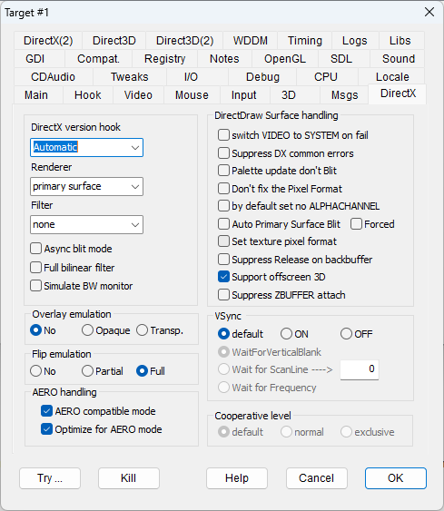
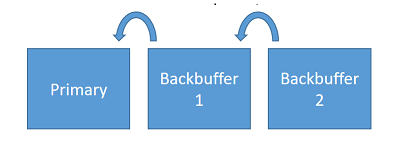
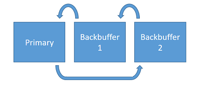

DirectX Version Hook: Sets the basic intervention strategy. DxWnd should use a different hooking technique depending on the technology of the game. Automatic mode tries to find the correct technique by itself, but it doesn't always succeed. OpenGL handling requires a dedicated setting (see OpenGL).
Available options:
Automatic
DirectX1~6
DirectX7
DirectX8
DirectX9
DirectX10
DirectX11
None
In "Automatic" (the default mode), DxWnd automatically detects the DirectX calls and hooks them to track and modify the calls and their corresponding COM methods. In some cases though, DxWnd is unable to properly detect these calls and the windowing effect can be recovered by explicitly telling DxWnd the version of DirectX that it should hook. Each option corresponds to a different DLL file that is involved in the DirectX implementation. This is directed by the following options:
DirectX1~6 (for ddraw.dll)
DirectX7 (for ddrawex.dll)
DirectX8 (for d3d8.dll)
DirectX9 (for d3d9.dll)
DirectX10 (for ...)
DirectX11 (for ...)
The last two options are generally useless, since the current Direct3D10/11 implementation seems to be based on Direct3D9, so hooking DirectX9 works for them as well (however, the implementation may change in the future).
It is also possible to specify the option "None" to avoid hooking DirectX at all. This could be helpful whenever you are interested in DxWnd features that are not related to the graphics (e.g., time stretching, compatibility options) and you want to leave the graphics alone.
DirectX emulation determines how the fullscreen DirectX operations are managed to fit in a windowed environment, with the following options:
|
None |
The primary surface and backbuffers are simply scaled to the desired size, but no other feature is altered. In particular, the pixel color depth and mode are not altered. |
|
Primary Buffer |
Same as "None," but blit operations are made against a memory surface and then transferred to the real primary surface: this handles the so-called "pitch-bug" problem. |
|
Locked Surface |
Same as "Primary Buffer" (EMULATEBUFFER), but the buffer is the surface of an OFFSCREENPLAIN DirectDraw surface, so it is handled similarly to a DirectX surface buffer. |
|
Primary Surface |
The virtual primary surface has a different color depth from the real primary surface, and DxWnd takes care of the color transformation internally: it might be a little slower but it involves no screen mode changes. Furthermore, this option allows you to set the "Set AERO compatible mode" that avoids making a temporary color conversion and stretching it to the primary surface (which would break the AERO desktop composition mode). |
|
GDI |
Similar to "Primary Surface" mode (EMULATESURFACE), but DxWnd forwards all the conversion between the virtual primary interface and the window surface instead of managing it internally. Because of the recent optimizations to GDI that can now take advantage of hardware-accelerated functions, this mode is becoming particularly interesting, and the lack of extra service surfaces brings it closer to the original game schema. It is also quite respectful of AERO desktop modes. |
|
SDL |
Similar to "Primary Surface" mode (EMULATESURFACE), but DxWnd uses SDL functions to bring the emulated primary surface to screen. |
|
SDL2 |
Same as SDL, but using the newer SDL2 library. |
|
OpenGL |
Same as SDL, but using OpenGL functions. This is a new and experimental blitter, derived from Jari Komppa's "ddhack" tool, that transfers the DirectDraw blitted surface (typically the backbuffer) to an OpenGL texture and then moves it to the screen. The use of OpenGL texture brings out better performance, quality and the possibility to add aditional features. |
|
D3D9 |
Same as SDL, but using Direct3D9 functions. This renderer uses (when supported by the video card) HW acceleration to process the graphics, so it may have optimum quality and performance, but it may show incompatibilities when rendering programs that are natively based on Direct3D9 already. |
Note that the chosen option only influences DirectDraw1 through DirectDraw7 interfaces. Interfaces with Direct3D8 and up (or OpenGL) are not affected by these options.
NOTE: Not all emulation modes support filtering. In case filtering is not supported, the listbox is grayed out and becomes inactive. When the emulation mode is updated, the listbox will be updated as well, listing all available filters (if any) for the new emulation mode and defaulting the selection to "none". If no filters are available for the selected emulation mode, then the listbox will be grayed out.
|
none |
The normal mode, with no additional filters. |
|
Fast 2X Bilinear |
Activates a simplified filter that scales each pixel twice, interpolating the colors of adjacent pixels. The default window size is double the resolution of the virtual screen. If you choose a different size, the surface is scaled to fit into the client area, but this noticeably slows down the blit operation. |
|
HQ 2X/3X/4X |
High quality, scales the surface of a 2X/3X/4X factor by interpolating the adjacent pixel colors. |
|
deinterlace |
When this filter detects even or odd full black lines, it replaces them with the line above. This eliminates the striped effect of old interlaced movies. |
|
interlace |
Opposite of deinterlace, it forcefully inserts even black lines to simulate a retro-gaming interlaced video. |
|
PIX 2X/3X/4X |
Experimental, simply scales the pixels by 2X, 3X, or 4X without making any attempt to interpolate them. |
|
Scale2X 2x/3x/4x |
Scaling algorithm meant to smooth the pixel lines by scaling the pixels of a 2X, 3X or 4X factor, used in the "AdvanceMAME" program and by the kind courtesy of A. Mazzoleni. It is the best fit for low-resolution and non-aliased screens. |
|
Scale2K 2x/3x/4x |
Same as Scale 2X but with better support for color transitions. |
|
Blur effect |
Currently implemented for the OpenGL renderer only, thanks to the source code found in "ddhack". It simulates a partial persistency effect of past frames as visible in old LCD monitors. |
|
Dithering |
Forces color dithering with a limited color palette. |
|
HalfTone |
Available in GDI renderer, forces halftone filtering when GDI scales the images. |
|
Rotate 90/180/270 |
Available in OpenGL renderer, rotates the images by 90, 180 or 270 degrees. |
|
Blur |
Available in OpenGL renderer, produces a blur effect by mixing the current and past images. |
|
Async blit mode |
ASYNCBLITMODE |
Runs the final phase of the blit operation to the screen in asynchronous mode. When the flag is not set, each blit operation to the primary surface is executed, including the color conversion and scaling. This operation, in case of programs that make frequent updates of tiny portions of the screen, can be very CPU and bandwidth consuming . When the flag is set, on the contrary, the final phases of the blit operations are performed asynchronously at the screen refresh rate of 60Hz, no matter whether the primary surface was updated or not. So, depending on the nature of the program, it could be more convenient to either set or to unset this option. |
|
Full Bilinear |
BILINEARFILTER |
Activates a bilinear filter to scale the DirectDraw primary surface to the window client area. When this is used with GDI games, it activates GDI internal filtering for better scaling. |
|
Simulate BW monitor |
BLACKWHITE |
Activates a tweak in the palette handling that causes all the colors to be replaced with their corresponding grayscale color. It works only on 8bpp palettized games or while emulating 16bpp on a 32bpp desktop. |
|
switch VIDEO to SYSTEM on fail |
VIDEOTOSYSTEMMEM |
When this option is set and a CreateSurface fails because of video memory shortage, DxWnd backs this up by creating the surface on memory. Oddly enough, some games expect to notice this by themselves and work correctly only when the option is NOT set. |
|
Suppress DX common errors |
SUPPRESSDXERRORS |
Some games running in windowed mode generate sporadic errors that wouldn't prevent the game from working, but terminate the game. This option makes DirectX methods return a manageable condition in such common cases. |
|
Palette update don't Blit |
NOPALETTEUPDATE |
Avoids executing a blit operation in case of a palette update. This could be used to fix conflicts between GDI and DirectDraw palette updates. |
|
Don't fix the Pixel Format |
NOPIXELFORMAT |
Tries not to fix the surface pixel format. |
|
By default set no ALPHACHANNEL |
NOALPHACHANNEL |
By default, DirectDraw surfaces are created with alpha channel capability. This flag directs the creation of surfaces without alpha channel capability. |
|
Auto Primary Surface Blit |
AUTOREFRESH |
Some games ignore DirectDraw specifications, updating the memory address returned by the first IDirectDrawSurface::Lock operation, avoiding the need to unlock and lock on every frame (the original version of "Cossacks" does this). On modern systems, these games display a black screen even though the image is refreshed on the virtual surfaces. This flag periodically refreshes the display while processing the Windows message queue, forcing the game to blit each updated frame to the screen. |
|
Forced mode |
INDEPENDENTREFRESH |
Same as Auto Primary Surface Blit, but uses a dedicated thread to manage situations where the game doesn't process the message queue (e.g., during intro movies). |
|
Set texture pixel format |
TEXTUREFORMAT |
Applies the virtual pixel format to texture surfaces that don't have an explicit DDSD_PIXELFORMAT attribute. |
|
Suppress Release on backbuffer |
SUPPRESSRELEASE |
This flag ensures that the DirectDraw backbuffer surface, a critical resource, will not be released in emulated modes, even if explicitly requested. |
|
Support offscreen 3D |
OFFSCREENZBUFFER |
Allows the creation of a ZBUFFER surface in some conditions (fixes "Nightmare Creatures" and the Direct3D version of "Dungeon Keeper" [with "Handle Exceptions" enabled]). |
|
Suppress ZBUFFER attach |
NOZBUFATTACH |
Pretends that the ZBUFFER surface is not attached to another surface, even if that is the case. This may prevent Direct3D CreateSurface from returning an error code (fixes "Silkolene Honda Motocross GP"). |
|
No |
No overlay emulation, to use overlays the feature must be supported. |
Opaque |
EMULATEOVERLAY |
Pretends that the system can handle overlay surfaces. This feature depends on the video hardware capabilities, and many drivers dropped its support since the era of Windows Vista, thus making it impossible to run a few games that rely on its availability (namely, "The Godfather"). The flag pretends that the DirectDraw session can handle overlay surfaces and emulates this unsupported feature by emulating some FourCC codecs in software (at the moment, only YUY2) and blitting the frames to an overlying window. The fake-overlay window is opaque, so this mode is good in all cases where the overlay is overlapped to the whole primary surface. The flag should not be used together with the "DirectX(2) > Suppress overlay capability" (SUPPRESSOVERLAY) flag. |
|
Transparent |
EMULATEOVERLAY + TRANSPARENTOVERLAY |
It makes the overlay window transparent. This mode is necessary when the overlay is smaller than the primary surface (e.g., in the "mosquito.exe" sample in the Microsoft DX6/7 SDK). |
Surface flipping is normally well supported in fullscreen mode, but when the program is forced to run in windowed mode, the Flip operation is unsupported and the behavior of the Flip operation should be emulated.
|
No |
No Flip emulation, the operation is attempted using the native DirectDrawSurface Flip method. |
|
|
Partial |
HALFFLIPEMULATION |
In most cases, it is not necessary to bring the primary surface content to the backbuffer, the program can work flawlessly by just moving the backbuffer surface to the front buffer, with a better performance. The picture shows how the surface contents are moved in a generic, three surface flipchain. It should be noted that in the most common case of a flipchain with a single backbuffer, half flip emulation requires a single surface copy. 
|
|
Full |
FULLFLIPEMULATION |
In several cases (mostly involving mouse cursor movement), this partial Flip emulation leaves trails on the screen. This option implements a slower but more accurate method of Flip emulation that resolves the issue. For an example, see Examples > Robin Hood - The Legend of Sherwood. The picture shows how the surface contents are moved in a generic, three surface flipchain.
|
|
Set AERO compatible mode |
SETCOMPATIBILITY |
Forces the program to be compatible with AERO desktop mode by invoking the DirectDraw SetAppCompatData call, suppressing the switch from AERO to standard desktop mode. Useful for Windows Vista to Windows 8. |
|
Optimize for AERO mode |
AEROBOOST |
Optimizes operations for the AERO environment. All stretching and color conversion operations are made on system memory surfaces, and then the final blit to the screen doesn't break the AERO mode. |
This panel contains a set of different options meant to fine tune the vertical sync feature. Here, by VSync we mean the wait operation performed by the WaitForVerticalBlank() DirectDraw method. It should be noted that the VSync is always referred to operations toward the real primary surface on the video memory, so in direct modes, it changes the Flip/Blt to primary surface operations, while in emulated modes, it applies only to blit operations from the virtual primary surface to the real primary surface. The panel contains two selectors, one to specify whether to perform the VSync operation or not, the other to determine the method to be used. It should be noted that the former flag "Optimize CPU" is equivalent to the combination of VSync "ON" + "WaitForFrequency".
|
Default |
Set by default. DxWnd closely follows the program's indications about VSync. |
|
|
ON |
FORCEVSYNC |
When not present, DxWnd inserts a WaitForVerticalBlank operation before each Blt/Flip to the primary surface. |
|
OFF |
FORCENOVSYNC |
Any WaitForVerticalBlank() invocation is bypassed. |
|
WaitForVerticalBlank |
Set by default. When performed, the VSync operation invokes the DirectDraw native WaitForVerticalBlank method. |
|
|
WaitForScanline |
VSYNCSCANLINE |
This flag is for experimental usage, mainly to try to cause bad wait conditions on the vertical blank condition. The DirectDraw WaitForVerticalBlank method only allows for two operation modes, DDWAITVB_BLOCKBEGIN and DDWAITVB_BLOCKEND. Setting this flag, the operation is replaced by a series of Sleep(1) waits until the vertical line reaches a given threshold set in the numeric field to the right. The number in there, ranging from 1 to some value above 100, indicates the percentage of vertical line that triggers the end of wait condition. |
|
WaitForFrequency |
SAVELOAD |
On some specific hardware and conditions, the WaitForVerticalBlank method could be either unimplemented or implemented in such a way that causes heavy CPU consumption. The WaitForFrequency flag replaces the WaitForVerticalBlank() implementation with an equivalent Sleep(n) operation, where 'n' is calculated to match the exact video vertical frequency. This way, CPU consumption is lowered to the minimum, though the operation is performed regardless of the actual vertical line position. On modern computers and video hardware though, this aspect is usually irrelevant and the risk of getting video tearing is absent. |
|
default |
Keeps the cooperative level set by the program with no changes. |
normal |
LOCKNORMALCOOP |
Forces the DDSCL_NORMAL cooperative level |
|
exclusive |
LOCKEXCLUSIVECOOP |
Forces the DDSCL_EXCLUSIVE (together with DDSCL_FULLSCREEN) cooperative level . |